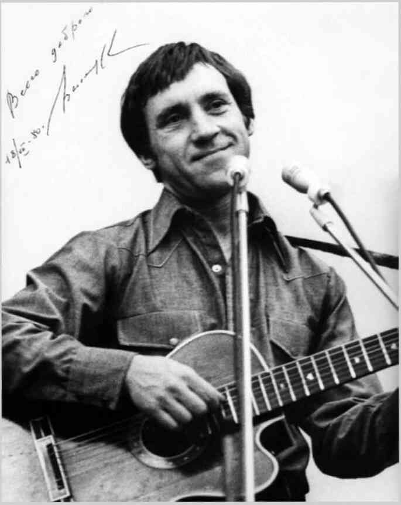

| -----1----- Дорогая передача! Во субботу, чуть не плача, Вся Канатчикова дача К телевизору рвалась. Вместо чтоб поесть, помыться, Там это, уколоться и забыться, Вся безумная больница У экранов собралась. |
-----2----- Говорил, ломая руки, Краснобай и баламут Про бессилие науки Перед тайною Бермуд. Все мозги разбил на части, Все извилины заплёл — И канатчиковы власти Колют нам второй укол. |
| -----3----- Уважаемый редактор! Может, лучше — про реактор? Там, про любимый лунный трактор? Ведь нельзя же! — год подряд То тарелками пугают — Дескать, подлые, летают, То у вас собаки лают, То руины говорят! |
-----4----- Мы кое в чём поднаторели: Мы тарелки бьём весь год — Мы на них уже собаку съели, Если повар нам не врёт. А медикаментов груды Мы — в унитаз, кто не дурак. Это жизнь! И вдруг — Бермуды! Вот те раз! Нельзя же так! |
| -----5----- Мы не сделали скандала — Нам вождя недоставало: Настоящих буйных мало — Вот и нету вожаков. Но на происки и бредни Сети есть у нас и бредни — И не испортят нам обедни Злые происки врагов! |
-----6----- Это их худые черти Мутят воду во пруду, Это всё придумал Черчилль В восемнадцатом году! Мы про взрывы, про пожары Сочинили ноту ТАСС… Но примчались санитары И зафиксировали нас. |
| -----7----- Тех, кто был особо боек, Прикрутили к спинкам коек — Бился в пене параноик, Как ведьмак на шабаше: «Развяжите полотенцы, Иноверы, изуверцы, — Нам бермуторно на сердце И бермудно на душе!» |
-----8----- Сорок душ посменно воют, Раскалились добела — Во как сильно беспокоят Треугольные дела! Все почти с ума свихнулись — Даже кто безумен был, И тогда главврач Маргулис Телевизор запретил. |
| -----9----- Вон он, змей, в окне маячит — За спиною штепсель прячет, Подал знак кому-то — значит Фельдшер вырвет провода. И что ж, нам осталось уколоться, И упасть на дно колодца, И там пропасть, на дне колодца, Как в Бермудах, навсегда. |
-----10---- Ну а завтра спросят дети, Навещая нас с утра: «Папы, что сказали эти Кандидаты в доктора?» Мы откроем нашим чадам Правду — им не всё равно, Мы скажем: «Удивительное рядом, Но оно запрещено!» |
| -----11---- Вон дантист-надомник Рудик — У его приёмник «грюндиг», Он его ночами крутит — Ловит, контра, ФРГ. Он там был купцом по шмуткам И подвинулся рассудком — И к нам попал в волненье жутком И с номерочком на ноге. |
-----12---- Он прибежал, взволнован крайне, И сообщеньем нас потряс, Будто наш научный лайнер В треугольнике погряз: Сгинул, топливо истратив, Прям распался на куски, И двух безумных наших братьев Подобрали рыбаки. |
| -----13---- Те, кто выжил в катаклизме, Пребывают в пессимизме, Их вчера в стеклянной призме К нам в больницу привезли, И один из них, механик, Рассказал, сбежав от нянек, Что Бермудский многогранник — Незакрытый пуп Земли. |
-----14---- «Что там было? Как ты спасся?» — Каждый лез и приставал, Но механик только трясся И чинарики стрелял. Он то плакал, то смеялся, То щетинился как ёж — Он над нами издевался… Ну сумасшедший — что возьмёшь! |
| -----15---- Взвился бывший алкоголик — Матерщинник и крамольник: «Надо выпить треугольник! На троих его! Даёшь!» Разошёлся — так и сыпет: «Треугольник будет выпит! Будь он параллелепипед, Будь он круг, едрена вошь!» |
-----16---- Больно бьют по нашим душам «Голоса» за тыщи миль. Мы зря Америку не глушим, Ой, зря не давим Израиль: Всей своей враждебной сутью Подрывают и вредят — Кормят, поят нас бермутью Про таинственный квадрат! |
| -----17---- Лектора из передачи (Те, кто так или иначе Говорят про неудачи И нервируют народ), Нас берите, обречённых, — Треугольник вас, учёных, Превратит в умалишённых, Ну а нас — наоборот. |
-----18---- Пусть безумная идея — Вы не рубайте сгоряча. Вызывайте нас скорее Через гада главврача! С уваженьем… Дата. Подпись. Отвечайте нам, а то, Если вы не отзовётесь, Мы напишем… в «Спортлото»! |